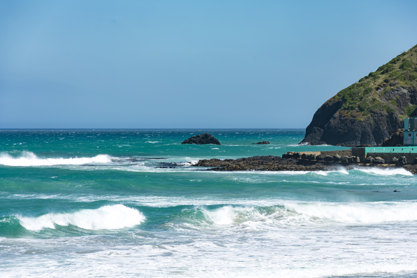

St Clair Bay
Dunedin Tourist Location
Dunedin's Beautiful Coastal Beach!
St Clair Bay is one of Dunedin's most popular coastal
destinations, located just a short distance from the city
centre. The beach is known for its long stretch of sand,
dramatic ocean views, and lively atmosphere. It is a great
place for visitors wanting to experience Dunedin's
beautiful coastline.
Visitors can walk along the beach, enjoy the ocean views,
take photographs, swim, or watch surfers in the water.
The nearby St Clair Esplanade also has a variety of cafes,
restaurants, and shops, making it easy to spend several
hours exploring the area. The beach is particularly
enjoyable around sunrise and sunset when the coastline
becomes especially scenic.
Visiting St Clair Bay is an affordable activity because
access to the beach is free. Visitors may want to budget
for food or drinks at nearby cafes and restaurants, as
well as transport or parking costs. This makes St Clair
Bay a good option for travellers looking for a scenic
destination without a large entry fee.
Facts:
- Located near Dunedin city centre
- Popular sandy beach
- Known for its coastal scenery and ocean views
- Popular location for surfing
- Great for walking and photography
- St Clair Esplanade has cafes and restaurants nearby
- Popular place to watch the sunset
- Free to access
Costs:
- Entry to St Clair Bay: Free
- Walking and sightseeing: Free
- Estimated food costs: $10-$30 per person
- Estimated transport costs: $5-$20
- Estimated parking costs: $0-$10
- Estimated total visit cost: $15-$60 per person